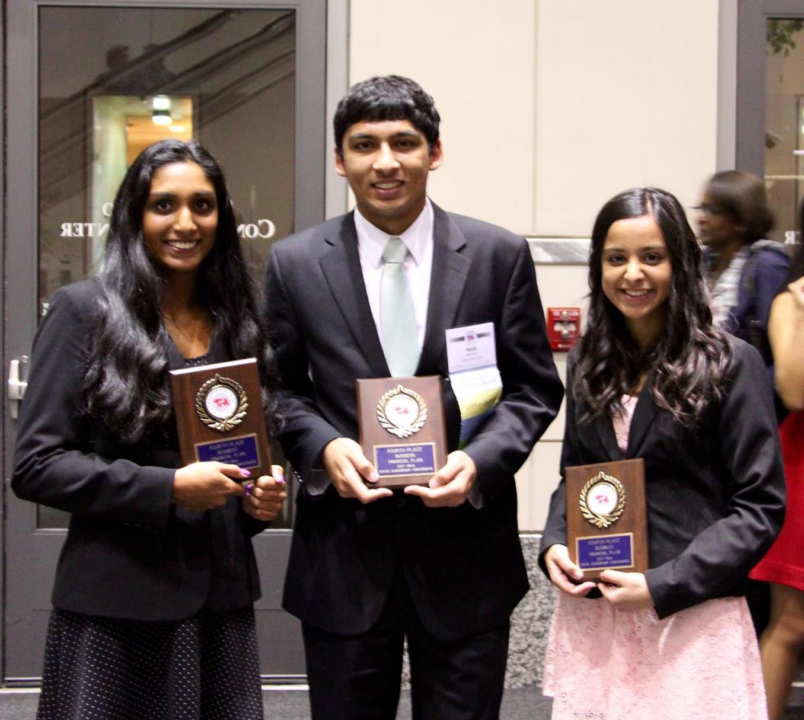
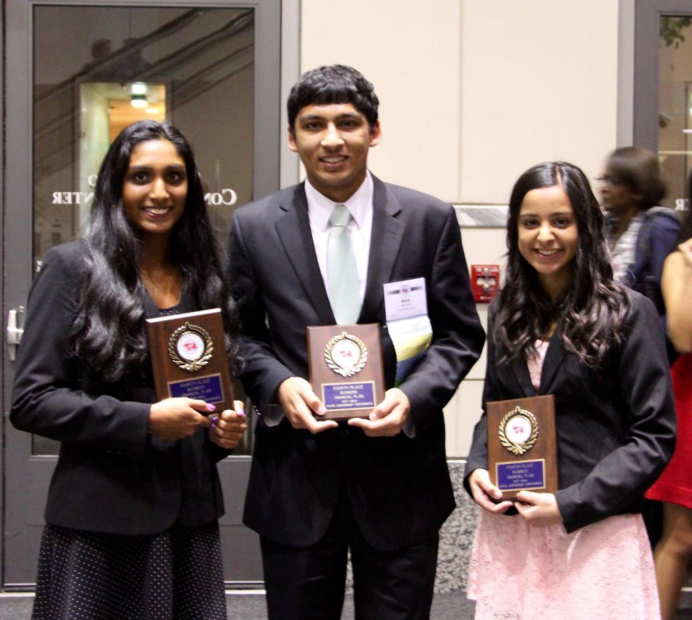

Ritik Batra
About Ritik
Ritik is currently 16 years old and is approaching his final year of high school at Lynbrook High School. Starting his journey as a curious and ecstatic child, Ritik has never failed to chase his dreams as a young adolescent. Searching for his passion, Ritik has been involved in many different disciples, such as biology, programming, chemistry, mathematics, and business. He has always found mathematics and chemistry to be his favorite courses in high school but strives to excel at all his classes. In addition to always putting 100% into his courses, Ritik enjoys undertaking different extracurricular. Ritik was on the Track and Field team in his freshman year, has taken lessons for the alto saxophone for seven years, and self-teaches himself the guitar and singing. As the Vice President of the class of 2018, American-Indo Student Association Co-President, and JUMP Dance Club Vice President, Ritik is no stranger to leadership roles and works to be an example for other students. Ritik also has work experience from Math Enrichment at Prospect High School during the summer as a Pre-Algebra and Algebra 2/Trigonometry teacher aid.
For more information, refer to his resume, GitHub, and DevPost below.


 
